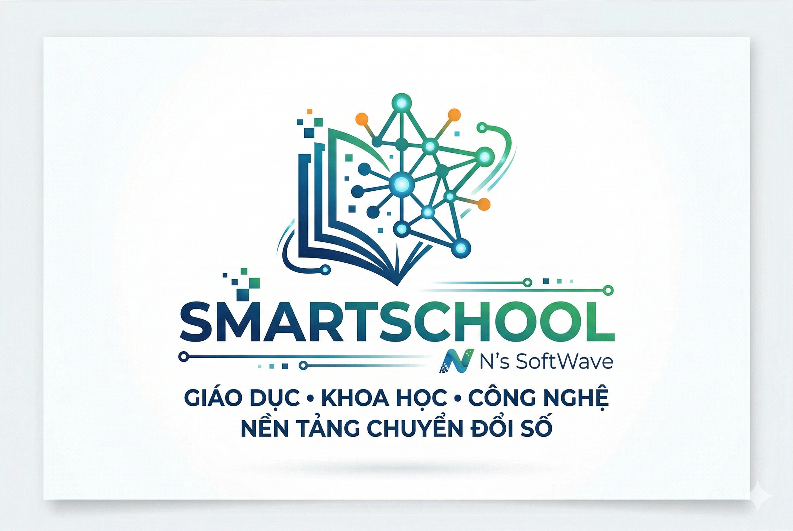

N's SoftWave là một tổ chức tập hợp các kỹ sư công nghệ và chuyên gia giáo dục đầy tâm huyết, chuyên nghiên cứu, xây dựng và phát triển các hệ sinh thái phần mềm (Website, Software, Game Education, Add-in...). Chúng tôi khao khát dùng công nghệ để phá vỡ mọi giới hạn của lớp học truyền thống.
Sản phẩm lõi SMARTSCHOOL.IO.VN ra đời như một trung tâm điều hành số, gánh vác sứ mệnh chuyển đổi số toàn diện trên cả 3 phương diện: Hoạt động hành chính, Hoạt động chuyên môn và Trải nghiệm học tập.
Thiết lập "Văn phòng không giấy tờ" (Paperless Office) thông qua việc số hóa toàn bộ hồ sơ, sổ sách và quy trình quản lý. Hệ thống giúp lưu trữ dữ liệu tập trung trên điện toán đám mây, tự động hóa các khâu trình ký, báo cáo thống kê, qua đó cắt giảm tối đa chi phí và thời gian vận hành cho ban giám hiệu.
Hiểu rằng mỗi cơ sở giáo dục có một đặc thù riêng, N's SoftWave thiết kế kiến trúc phần mềm theo dạng Module. Chúng tôi sẵn sàng tư vấn, xây dựng và lập trình thêm các tiện ích (Add-in), phần mềm chuyên biệt phục vụ chính xác bài toán nghiệp vụ mà đơn vị bạn đang cần giải quyết.
Cổng thông tin liên lạc minh bạch và tức thời. Dữ liệu học tập, chuyên cần, sức khỏe và các thông báo quan trọng được truyền tải theo thời gian thực (Real-time). Xây dựng một vòng tròn sinh thái chặt chẽ, đồng hành cùng sự phát triển toàn diện của người học.
Xóa nhòa ranh giới địa lý với không gian lớp học ảo (Virtual Classroom). Tích hợp các công cụ giao bài, bảng trắng điện tử và hệ thống hội nghị truyền hình. Cung cấp môi trường e-Learning tiêu chuẩn giúp học sinh có thể tiếp cận bài giảng mọi lúc, mọi nơi một cách trơn tru.
Số hóa công tác đánh giá năng lực với hệ thống thi trực tuyến bảo mật. Thuật toán tự động sinh đề từ ngân hàng câu hỏi, xáo trộn đáp án và chấm điểm ngay lập tức. Cung cấp biểu đồ phân tích phổ điểm chi tiết giúp giáo viên nắm bắt chính xác điểm mạnh/yếu của từng cá nhân.
Một phòng thí nghiệm ảo (Virtual Lab) dành riêng cho tư duy logic. Cung cấp các công cụ đồ họa trực quan để vẽ hình học không gian, mô phỏng hàm số Toán học. Đặc biệt, tích hợp trình biên dịch (Compiler) trực tuyến cho phép học sinh viết mã và thử nghiệm thuật toán Tin học ngay trên trình duyệt.
Ứng dụng triệt để cơ chế Gamification. Biến những kiến thức hàn lâm, khô khan thành những màn chơi vượt ải, giải đố. Kích thích sự hứng thú, tính cạnh tranh lành mạnh và kích hoạt tối đa khả năng ghi nhớ thụ động của não bộ thông qua cơ chế "Học mà chơi - Chơi mà học".
Kiến tạo một mạng lưới Tài nguyên Giáo dục Mở (Open Educational Resources). Các giáo viên, trường học có thể cùng nhau đóng góp, biên tập và chia sẻ giáo án, slide bài giảng, mô hình 3D... tạo nên một kho tàng tri thức đồ sộ phục vụ cộng đồng.
Để thích ứng với kỷ nguyên mới, Smart School cung cấp các chuyên mục chia sẻ thủ thuật Tin học thực chiến: từ tối ưu hóa hệ điều hành, làm chủ bộ công cụ Office, đến các kỹ năng bảo mật thông tin cá nhân trên không gian mạng, giúp định hình những Công dân số chuẩn mực.
Bức tranh tương lai của N's SoftWave không dừng lại ở việc số hóa tài liệu. Tầm nhìn chiến lược của chúng tôi là tích hợp sâu sắc Trí tuệ nhân tạo (AI) và Dữ liệu lớn (Big Data) vào Smart School. AI sẽ đóng vai trò như một gia sư ảo, tự động phân tích hành vi học tập để đề xuất lộ trình cá nhân hóa cho từng học sinh. Chúng tôi cam kết liên tục R&D (Nghiên cứu & Phát triển) để đưa công nghệ trở thành đòn bẩy vững chắc nhất, đưa nền giáo dục tiến vào kỷ nguyên thông minh, tự động và bền vững.